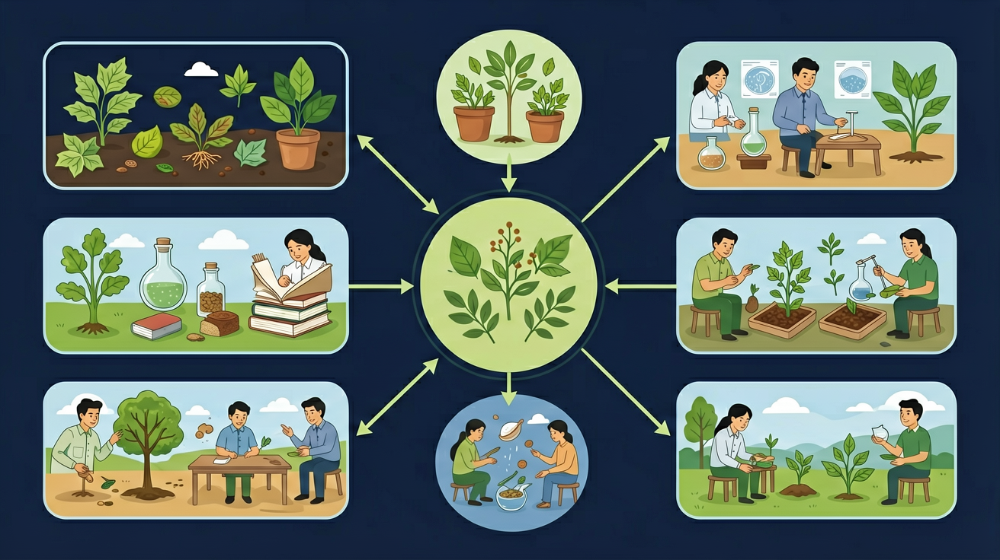

🎯 能说出6种常见材料的名称及用途
🎯 能判断材料特性与用途的匹配关系
🎯 能分析不同场景下的最佳材料选择
❓ 为什么塑料瓶不能装热水？
❓ 不锈钢和铁哪个更容易生锈？
❓ 陶瓷摔碎了还能粘回去吗？
学完这一课，这些问题你都能自信地回答。
下列哪种材料导热最快？
制作书包最适合的材料是？
我们每天吃饭要用木头筷子，喝水要用塑料杯子， 看风景要透过玻璃窗户，写作业要在纸张课本上。 生活中到处都有各种各样的材料。
可是，为什么锅要用金属做，而不用纸做呢？ 为什么雨衣要用塑料，而不用布料做呢？ 为什么窗户用玻璃，不用木头呢？ 不同材料有什么不一样的本领？
所以今天我们要认识六种生活中最常见的材料： 木头、金属、塑料、玻璃、布料和纸张， 了解它们各自的特性， 找出为什么每种物品要选择特定材料的秘密！
点击每张卡片，探索每种材料的秘密！
点击下方按钮，切换材料查看属性对比。悬停雷达图区域可查看具体数值！
根据材料特性，找到最合适的材料！
把下面的物品拖到正确的材料分类框中，看看你学会了吗？
📦 待分类物品（拖动它们到下方的分类框）：
选出正确答案，看看你掌握得怎么样！
完成各项学习任务，解锁专属科学家徽章！